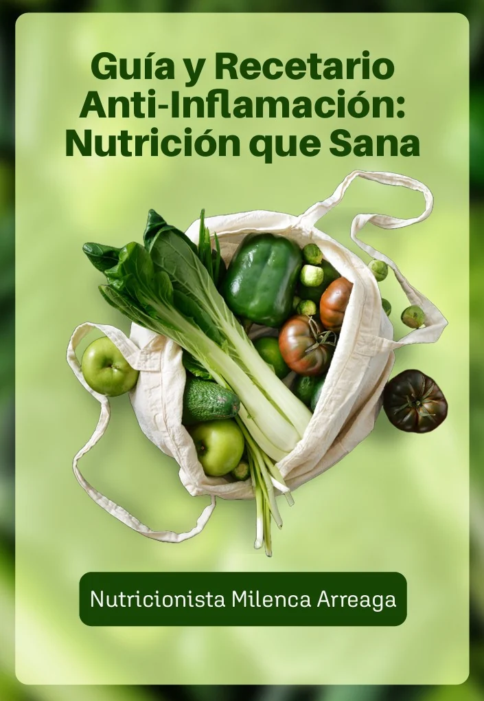

MétodoMeta Reset
- Programa integral de 2 meses
- 3 consultas
Una consulta inicial y dos controles personalizados.
Un proceso para trabajar en tu digestión, alimentación y composición corporal, con seguimiento y ajustes según tus necesidades y evolución.

De regalo · Exclusivo
Recetario antiinflamatorio
Un beneficio exclusivo del Método Meta Reset.
Inversión
$150
Quiero comenzar Meta Reset
Disponible en modalidad presencial u online.